ESCOLHA UM POKEMON
Você escolheu Froakie!
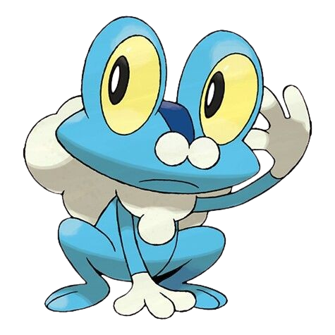
Froakie: #0656
Conhecido como o Pokémon Sapo Bolha, ele secreta bolhas finas e resistentes chamadas "Frubbles" para proteger seu corpo e reduzir o dano de ataques inimigos.
MELHORES
ATAQUES
Water pulse
Bubbles
Cut
Pound
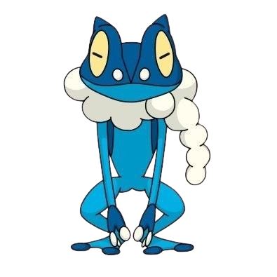
Frogadier: #0657
Este Pokémon utiliza sua velocidade e agilidade incomparáveis para confundir adversários, escalando tetos ou árvores em segundos para atacar de cima.
MELHORES
ATAQUES
Water pulse
Toxic spikes
Substitute
Double Team
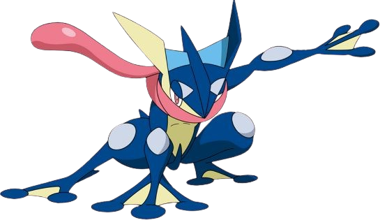
Greninja: #0658
Um mestre da furtividade que comprime água para criar shurikens afiadas, sendo capaz de fatiar metal com facilidade enquanto se move com a graça de um ninja.
MELHORES
ATAQUES
Water Shuriken
Extrasensory
Aerial Ace
Double Team
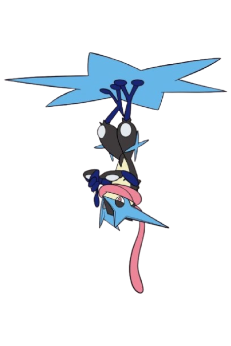
Ao Megaevoluir, o Greninja recebe um aumento significativo em suas estatísticas de Ataque, Ataque Especial e, principalmente, Velocidade, tornando-se um dos atacantes mais rápidos e letais do jogo.
Esta nova forma mantém a tipagem Água/Sombrio e destaca-se visualmente por ficar de cabeça para baixo sobre uma shuriken de água gigante, utilizando seus reflexos aprimorados para atacar primeiro sem precisar se esconder.
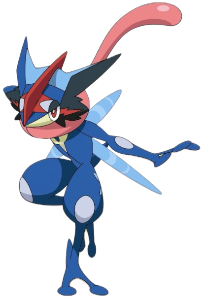
NAO ADICIONADO A POKEDEX, UMA FORMA EXCLUSIVA DO ASH QUE FOI ADICIONADA AOS JOGOS SOMENTE POR FÃS.
Você escolheu Fennekin!
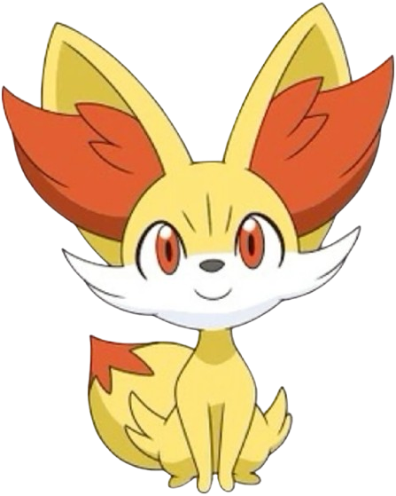
Fennekin: #0653
Comer um galho lhe dá energia, e ele expele ar quente de suas orelhas grandes para intimidar os inimigos.
MELHORES
ATAQUES
Ember
Will-O-Wisp
Growl
Tackle
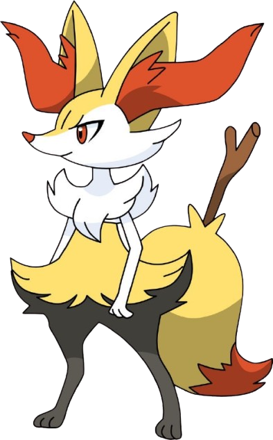
Braixen: #0654
Quando retira o galho de sua cauda, a fricção o incendeia, e ela o usa para enviar sinais aos seus companheiros ou desferir ataques.
MELHORES
ATAQUES
Flamethrower
Psyshock
Sunny Day
Light Screen
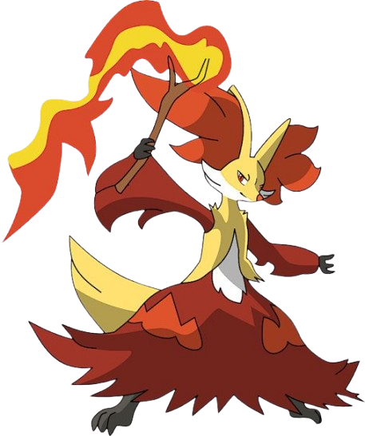
Delphox: #0655
Ao focar o olhar na chama na ponta de seu cajado, ela entra em um estado meditativo que lhe permite enxergar o futuro.
MELHORES
ATAQUES
Overheat
Psychic
Nasty Plot
Double Team
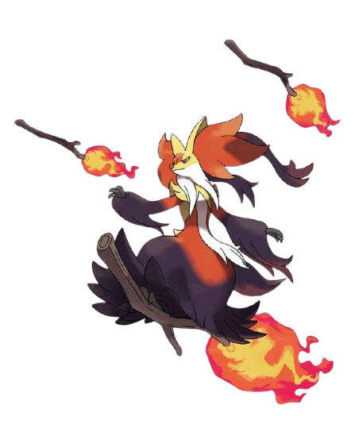
Ao atingir sua forma Mega, ela recebe um incremento massivo em seus atributos, elevando seu Ataque Especial para 159 e sua Velocidade para 134, tornando-a uma das batedoras especiais mais rápidas do jogo.
Apesar de sua aparência mística ser aprimorada com o uso de dois gravetos mágicos, ela mantém sua tipagem original Fogo/Psíquico, fortalecendo ainda mais seus ataques de STAB nessas categorias.
Você escolheu Mudkip!
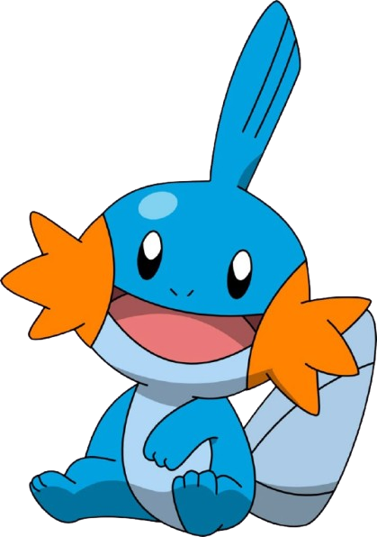
Mudkip: #0258
Utiliza a barbatana em sua cabeça como um radar altamente sensível para detectar correntes de água e movimentos no ar.
MELHORES
ATAQUES
Water gun
Rock Throw
Mud slap
Tackle
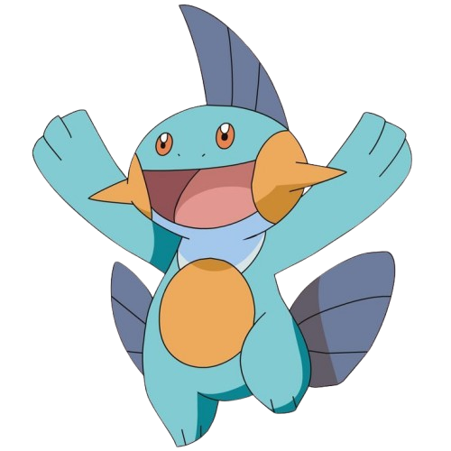
Marshtomp: #0259
Sua pele é coberta por uma membrana pegajosa que o permite viver e se mover com agilidade em terrenos lamacentos.
MELHORES
ATAQUES
Rock Smash
Water pulse
Rock slide
Mud Shot
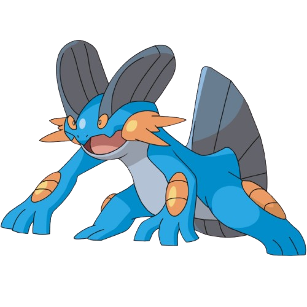
Swampert: #0260
É tão forte que pode prever tempestades apenas sentindo mudanças nas marés e possui visão aguçada mesmo em águas turvas.
MELHORES
ATAQUES
Waterfall
Waterpunch
stone edge
Earthquake
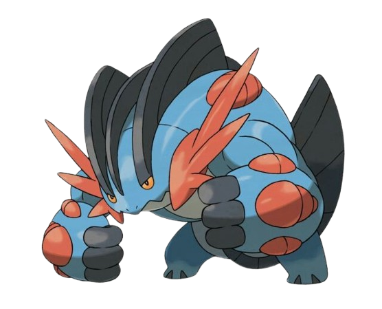
Ao Mega Evoluir, seus braços ganham uma musculatura colossal, permitindo que ele derrube navios gigantes e destrua rochas imensas com um único soco.
Graças à sua habilidade Swift Swim, ele se torna extremamente veloz sob a chuva, deslizando pela água e pela lama com uma agilidade surpreendente para o seu tamanho.
Você escolheu Piplup!
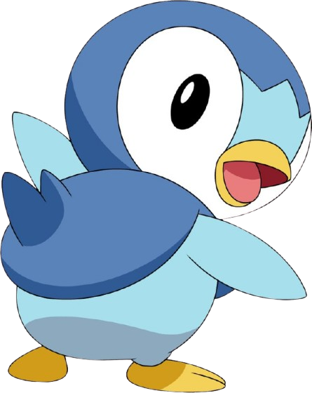
Piplup: #0393
Muito orgulhoso e difícil de treinar, ele estufa o peito para mostrar confiança mesmo quando tropeça
MELHORES
ATAQUES
Water gun
Water Pledge
Peck
Ice beam
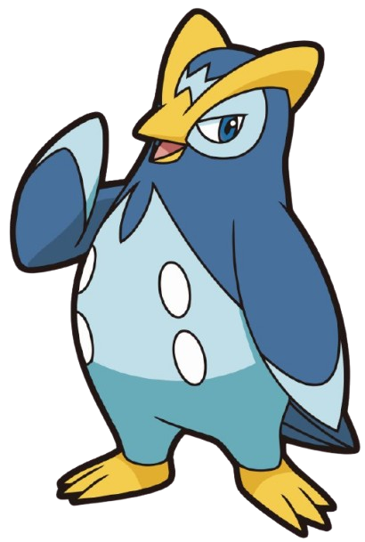
Prinplup: #0394
Vive solitário porque seu orgulho intenso o impede de formar bandos, acreditando ser sempre o mais importante.
MELHORES
ATAQUES
Metal Claw
Aqua Jet
Drill Peck
Brine
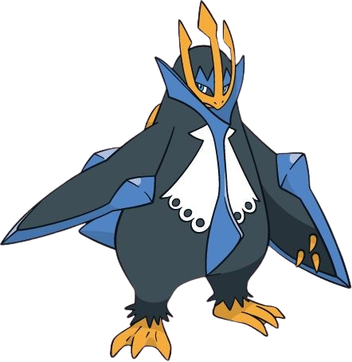
Empoleon: #0395
Se alguém fere seu orgulho, ele corta o inimigo com suas asas afiadas que possuem a força para partir blocos de gelo.
MELHORES
ATAQUES
Waterfall
Hydropump
Blizard
Haze
Você escolheu Oshawott!
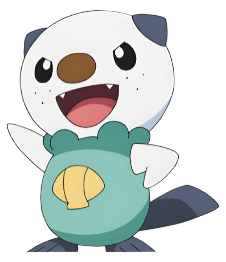
Oshawott: #0501
Ele luta usando a concha (scalchop) em seu ventre, que serve tanto como uma lâmina afiada quanto para bloquear ataques.
MELHORES
ATAQUES
Water Pulse
Razor Shell
Air Slash
Aqua Jet
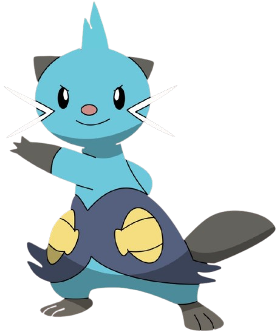
Dewott: #0502
Com um treinamento rigoroso, ele domina a técnica de manejar duas conchas ao mesmo tempo com movimentos fluidos como os de um espadachim.
MELHORES
ATAQUES
Razor Shell
Aqua Jet
X-Scizzor
Nigth Slash
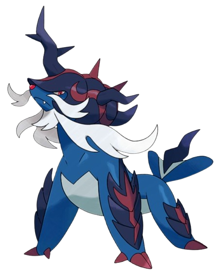
Samorott: #0503
Em um piscar de olhos, ele saca as espadas escondidas em suas armaduras de patas dianteiras para silenciar o inimigo antes mesmo que ele possa reagir.
MELHORES
ATAQUES
Mega Horn
Hydropump
Blizard
Secret Sword